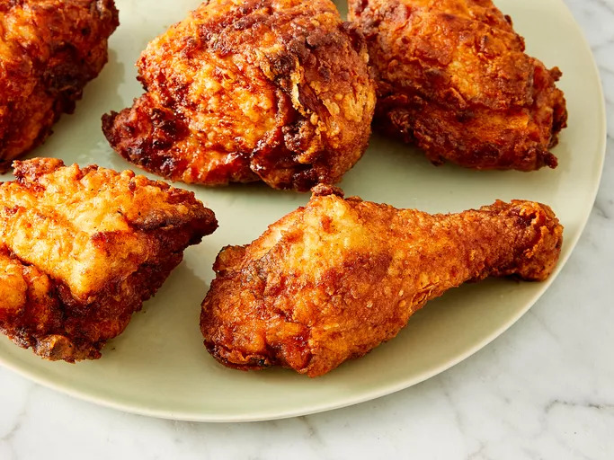

Fried Chicken

Fried chicken is a dish made from chicken pieces that are seasoned, coated in a batter or breading, and deep-fried or pan-fried until golden brown and crispy. The exterior is crunchy and flavorful, while the interior remains juicy and tender. The coating can range from light and crispy to thick and crunchy, often seasoned with a mix of spices such as salt, pepper, garlic powder, paprika, and other herbs. It is typically served hot and can be enjoyed on its own or with a variety of sides like mashed potatoes, coleslaw, or biscuits. Fried chicken is beloved for its rich flavor and satisfying texture.
Ingredients
- Chicken
- Buttermilk
- Flour
- Seasonings
- Oil
Steps
- Take your cut up chicken pieces and skin them if you prefer.
- Put the flour in a large plastic bag (let the amount of chicken you are cooking dictate the amount of flour you use). Season the flour with paprika, salt and pepper to taste (paprika helps to brown the chicken).
- Dip chicken pieces in buttermilk then, a few at a time, put them in the bag with the flour, seal the bag and shake to coat well.
- Place the coated chicken on a cookie sheet or tray, and cover with a clean dish towel or waxed paper. LET SIT UNTIL THE FLOUR IS OF A PASTE-LIKE CONSISTENCY. THIS IS CRUCIAL!
- Fill a large skillet (cast iron is best) about 1/3 to 1/2 full with vegetable oil. Heat until VERY hot.
- Put in as many chicken pieces as the skillet can hold. Brown the chicken in HOT oil on both sides.
- When browned, reduce heat and cover skillet; let cook for 30 minutes (the chicken will be cooked through but not crispy). Remove cover, raise heat again, and continue to fry until crispy.
- Drain the fried chicken on paper towels. Depending on how much chicken you have, you may have to fry in a few shifts. Keep the finished chicken in a slightly warm oven while preparing the rest.